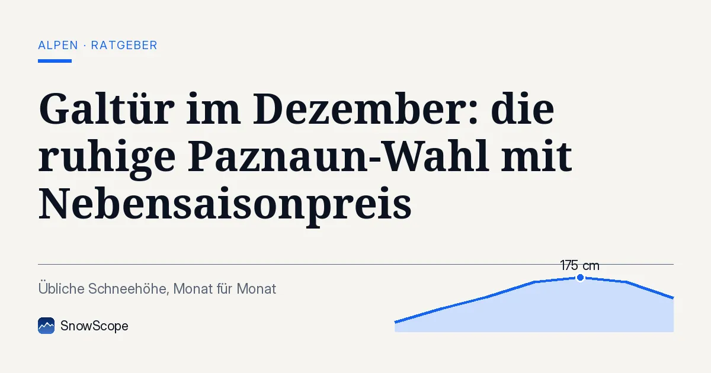

Galtür im Dezember: die ruhige Paznaun-Wahl mit Nebensaisonpreis
Galtür liegt am ruhigen Ende des Paznauns, sein tiefster Lift steht auf 1628 m. An einem typischen 15. Dezember liegen laut unserer Schneehistorie über 46 Winter 55 cm an der Mittelstation, und in der Nebensaison (bis 18. Dezember) kostet die offizielle Tageskarte 55,50 EUR.
Die Live-Schneeprognose für Galtür in der SnowScope-AppSchneehöhen, Pulverschnee-Alarme und 3D-Karte, gratis.
Was man über den Dezember hier denkt
Viele sehen Galtür als den kleinen, verschlafenen Nachbarn im Tal – nett für Familien, nichts für ernsthaften Schnee. Für den Dezember sagen die Zahlen das Gegenteil: Die Talstation liegt so hoch wie in Obertauern, und der Schnee ist etwas tiefer. In der Woche vom 15. bis 21. Dezember hatten 93 % unserer Winter an der Mittelstation (1961 m) mindestens 30 cm, am Gipfel (2295 m) 98 %.


Was 46 Winter wirklich zeigen
Ein typischer 15. Dezember bringt 40 cm im Tal, 55 cm an der Mittelstation und 73 cm am Gipfel. In der Weihnachtswoche hatte die Mittelstation in 96 % der Winter 30 cm und in 67 % 60 cm oder mehr. In keinem unserer Winter war die Talstation am 15. Dezember aper.
Anfang Dezember ist das Tal die Schwachstelle: Der übliche erste Tag mit 30 cm dort ist der 28. November, und nur 54 % der Winter hatten so viel vom 1. bis 7. Dezember. Der Trend ist mild: An der Mittelstation ging das Dezembermittel von 55 cm in den ersten 15 Wintern auf 50 cm in den letzten 15.
Der günstige Teil
Laut offizieller Liste startet die Saison in Galtür am 4. Dezember 2026. Die Nebensaison läuft bis 18. Dezember, mit einer Tageskarte für Erwachsene um 55,50 EUR und einem 6-Tage-Skipass um 258 EUR. Ab 19. Dezember gelten 58,50 EUR und 286,50 EUR.
Das gehört zu den niedrigsten Preisen eines hoch gelegenen Tiroler Skigebiets in dieser Serie – und der Schnee ist deshalb nicht schlechter.
Wo Obertauern ins Bild passt
Obertauern in Salzburg ist der naheliegende Vergleich: dieselbe Talstation auf 1628 m, ein größeres Gebiet (87 km kartierte Pisten gegen 27 km) und etwas weniger Dezemberschnee, mit 43 cm an der Mittelstation an einem typischen 15. Dezember und 80 % der Winter mit 30 cm in der Woche vom 15. bis 21. Dezember. Sein 6-Tage-Skipass vor Weihnachten kostet 331 EUR, mehr als die 258 EUR in Galtür.
Obertauern für Größe und Ski-in, Ski-out im Ort. Galtür für eine ruhigere, günstigere Woche mit etwas besseren Dezemberchancen.
Das Kleingedruckte
Galtür ist klein: 9 Lifte und 27 km kartierte Pisten. Gute Fahrer kennen es nach zwei Tagen und wollen vielleicht einen Tag woanders im Tal fahren. Die Straße am Ende eines langen Tals kann nach großen Stürmen wegen Lawinengefahr gesperrt werden – plane einen Puffertag ein.
Tipps für Skifahrer
- Eine Woche zwischen 4. und 18. Dezember buchen, dann gilt der Nebensaisonpreis (258 EUR für 6 Tage).
- Die zweite Dezemberwoche oder später wählen: Das Tal erreicht im Mittel erst gegen Ende November 30 cm.
- Einen Puffertag einplanen: Die Paznaunstraße kann nach starkem Schneefall gesperrt sein.
- Jeden Morgen den Lawinenlagebericht Tirol (avalanche.report) lesen, bevor du die Piste verlässt.
Weitere Karten (externe Seiten)
Quellen und Nachweise
- Galtür: official lift-pass prices (2026-27), checked 13 November 2026 www.galtuer.com/en/winter/operating-times-prices/skipass-prices-silvapark
- Obertauern: official lift-pass prices (2026-27), checked 13 November 2026 www.ski-obertauern.at/en/ski-pass/ski-pass-prices
Zu diesen Zahlen
Schneewerte: SnowScope-Schneehistorie, 46 vergangene Winter (1980-81 bis 2025-26) auf den Höhen des Skigebiets, höhenkorrigiert (eine Schätzung für eine Fläche, keine Meldungen des Skigebiets); „guter Schnee“ = im Wochenmittel 30 cm oder mehr am Boden. Karte: unsere übliche Schneehöhe am 15. Dezember, nach Höhe auf das Gelände verteilt. Pisten und Lifte: OpenSkiMap-Kartierung. Skipasspreise: offizielle Preislisten der Skigebiete, geprüft am 13. November 2026; Preise können sich ändern.
Offizielle Lawinenlageberichte: Lawinenwarndienst Vorarlberg
Diesen Bericht zitieren
Für Forschung, Lehre oder Presse: Zahlen und Grafiken sind unter CC BY 4.0 mit dieser Quellenangabe frei nutzbar.
SnowScope (2026), Galtür im Dezember: die ruhige Paznaun-Wahl mit Nebensaisonpreis, https://snowscope.app/blog/de/2026/11/galtuer-december-skiing-quiet-paznaun-budget.html, abgerufen am 2026-11-14
SnowScope (Atlas Labs). (2026, November 14). Galtür im Dezember: die ruhige Paznaun-Wahl mit Nebensaisonpreis. SnowScope snow reports. https://snowscope.app/blog/de/2026/11/galtuer-december-skiing-quiet-paznaun-budget.html
BibTeX
@misc{snowscope2026galtuerdecemberskiingqui,
author = {{SnowScope (Atlas Labs)}},
title = {Galtür im Dezember: die ruhige Paznaun-Wahl mit Nebensaisonpreis},
year = {2026},
month = nov,
howpublished = {\url{https://snowscope.app/blog/de/2026/11/galtuer-december-skiing-quiet-paznaun-budget.html}},
note = {Published 2026-11-14 13:29 UTC; accessed 2026-11-14}
}· CC BY 4.0 · Methoden, Daten und Werkzeuge →
Galtür: Schnee und Temperatur nach Höhe, dieser Winter vs letzter (Werkzeuge) →
Galtür folgen
Gratis: eine Nachricht, wenn Neuschnee kommt, und jeden Morgen die Vorhersage.